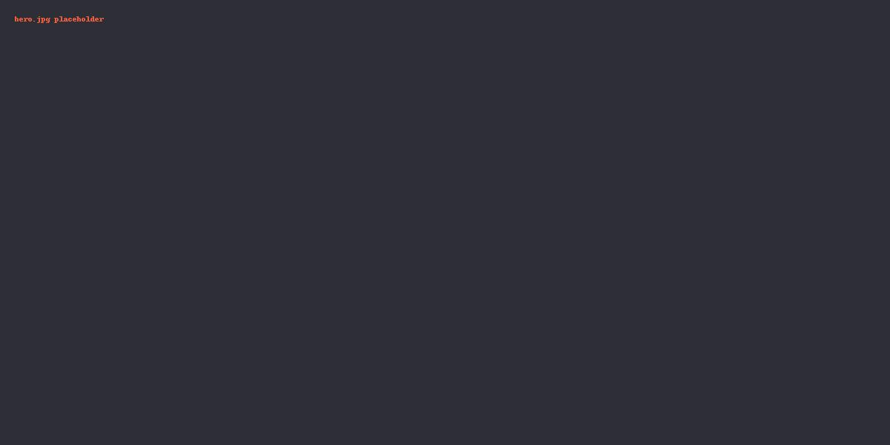

Neues Projekt-Template
Tailwind, Partials, Minify, automatische <picture>-Erzeugung, Backups und Deployment mit %BASE%.
Bild-Demo mit data-picture="auto"
Lege ein Bild z. B. unter src/img/hero.jpg ab und nutze:
<img data-picture="auto" src="img/hero.jpg" alt="Hero">
